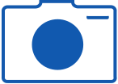
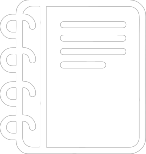
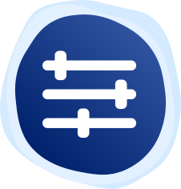

O Naut é uma aplicação em
nuvem com objetivo de auxiliar pessoas que se enquadram no
TEA para uma melhor comunicação e promover uma maior inclusão.
Funciona como um sistema de
comunicação, entre tanto, com
foco para crianças autista, e
todo o design e recursos são
pensados cautelosamente para
o seu uso. É muito importante
também que tenha sempre um
responsável presente, tendo
em vista que há uma curva de
aprendizado
Como funciona o NAUT?
Cartões
O Naut conta com o sistema de
cartões narrados ou escritos.
Existem cartões de ação,
emoção, objetos, comida e
necessidades básicas, para que
o usuário tenha uma melhor
comunicação.

Galeria
Além de ter seus cartões pré-
definidos, terá cartões
personalizados, o usuário
poderá criar seu próprio cartão
do zero que posteriormente
ficará disponível para uso.

Diário
Com o diario é possível
combinar cartões e palavras
formando frases que podem
ser usadas depois ajudando
com a formação de frases mais
completas e que podem ser
utilizadas diversas vezes. Isso
ajuda ao aprendizado e
expansão de vocabulário.
O NAUT também oferece

Personalização
O diferencial do Naut é a
personalização, a criação dos
próprios cartões com a galeria,
cada um age como um auxílio
ao usuário para que tenha uma
melhor experiência em nosso
sistema.
Instituição
Instituição
O naut também oferece
licensas institucionais para
escolas sendo possível utilizá-lo
dentro do ambiente escolar por
professores que podendo criar
atividades para seus alunos,
assim oferecendo a inclusão e
apoio necessário para um aluno
com autismo.